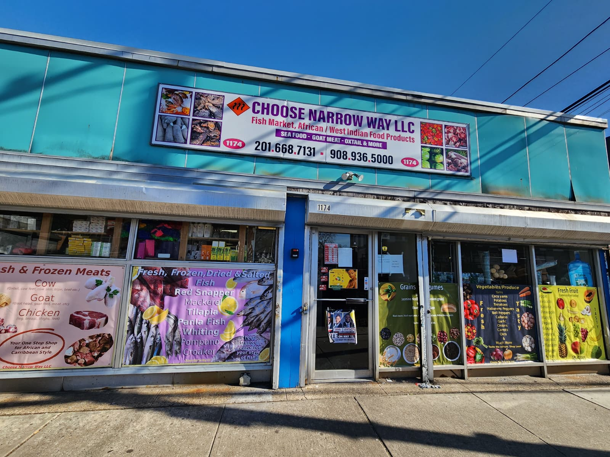
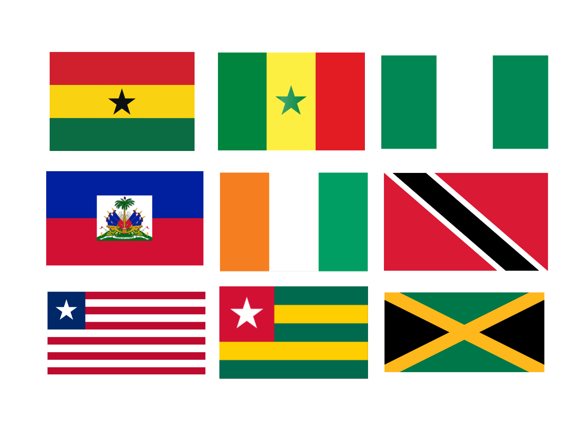

Choose Narrow Way LLC is a modern African and Caribbean market rooted in the vibrant culinary traditions of West Africa, East Africa, and the Caribbean. We provide authentic groceries for families and food lovers seeking real, hard‑to‑find ingredients—from fresh produce and halal meats to premium spices, grains, and everyday pantry staples. Our shelves feature customer favorites like Jamaican hot peppers, callaloo, plantain, African yams, coco yams, Ghanaian shito, Nigerian egusi, oxtail, goat meat, cow feet, fresh fish, frozen fish, and a wide selection of dried seafood. Whether you're preparing a traditional dish or discovering new flavors, we’re committed to offering quality, authenticity, and a shopping experience that feels like home. Choose the Narrow Way—not the broad way.

